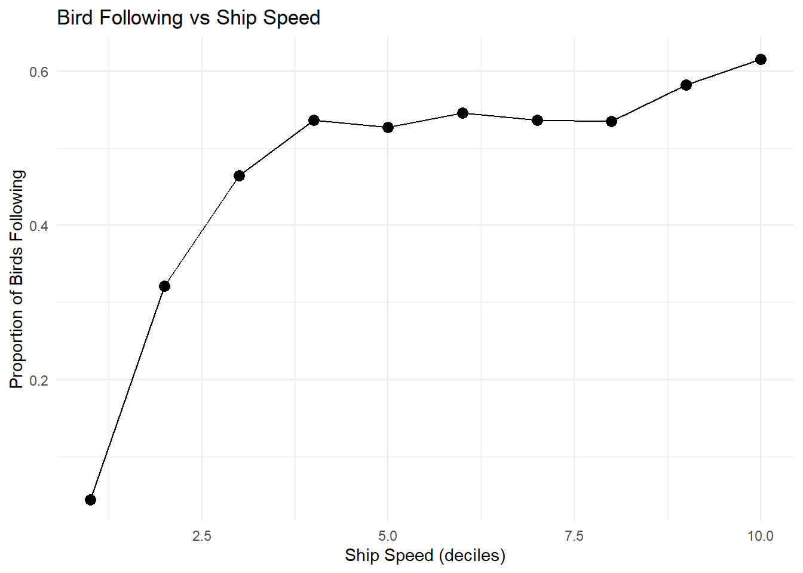
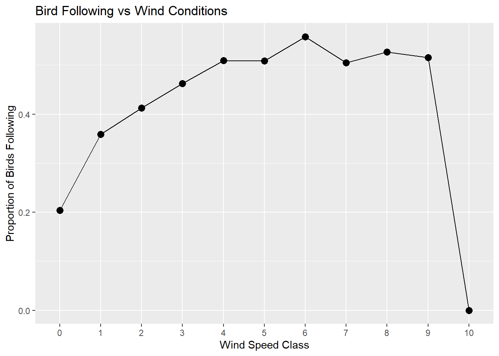
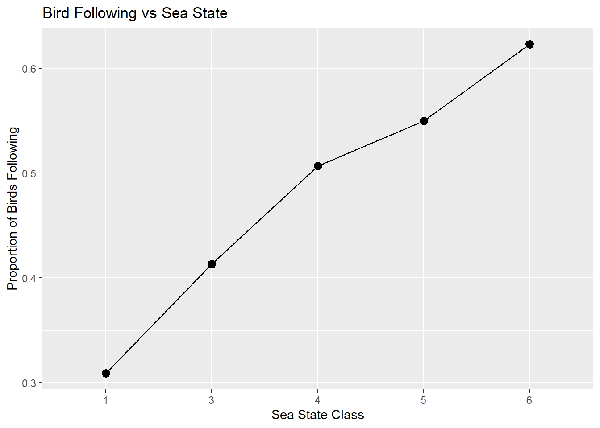
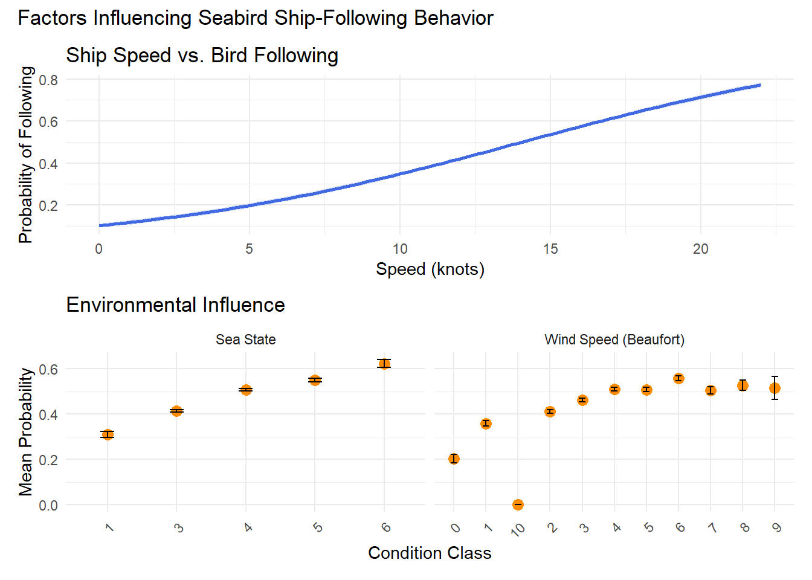

The assignment is to partipate in this week’s (April 13 - 19, 2026) Tidy Tuesday. The dataset is entitled Bird Sightings at Sea and consists of log bird entries of bird sightings at sea near New Zealand from 1969 to 1990.
Question: Are birds more likely to follow ships under certain environmental and ship conditions?
Load and Clean Data
# Load packages. library(tidyverse)
── Attaching core tidyverse packages ──────────────────────── tidyverse 2.0.0 ──
✔ dplyr 1.1.4 ✔ readr 2.1.6
✔ forcats 1.0.1 ✔ stringr 1.6.0
✔ ggplot2 4.0.1 ✔ tibble 3.3.1
✔ lubridate 1.9.4 ✔ tidyr 1.3.2
✔ purrr 1.2.1
── Conflicts ────────────────────────────────────────── tidyverse_conflicts() ──
✖ dplyr::filter() masks stats::filter()
✖ dplyr::lag() masks stats::lag()
ℹ Use the conflicted package (<http://conflicted.r-lib.org/>) to force all conflicts to become errors
library(ggplot2)# Access the dataset by reading directly from Github. Code provided by Tidy Tuesdays / Jon Harmon. beaufort_scale <- readr::read_csv('https://raw.githubusercontent.com/rfordatascience/tidytuesday/main/data/2026/2026-04-14/beaufort_scale.csv')
Rows: 13 Columns: 4
── Column specification ────────────────────────────────────────────────────────
Delimiter: ","
chr (1): wind_description
dbl (3): wind_speed_class, wind_speed_knots_min, wind_speed_knots_max
ℹ Use `spec()` to retrieve the full column specification for this data.
ℹ Specify the column types or set `show_col_types = FALSE` to quiet this message.
Rows: 7 Columns: 4
── Column specification ────────────────────────────────────────────────────────
Delimiter: ","
chr (1): sea_state_description
dbl (3): sea_state_class, wave_meters_min, wave_meters_max
ℹ Use `spec()` to retrieve the full column specification for this data.
ℹ Specify the column types or set `show_col_types = FALSE` to quiet this message.
Rows: 12310 Columns: 21
── Column specification ────────────────────────────────────────────────────────
Delimiter: ","
chr (7): hemisphere, activity, cloud_cover, precipitation, observer, censu...
dbl (12): record_id, latitude, longitude, speed, direction, wind_speed_clas...
date (1): date
time (1): time
ℹ Use `spec()` to retrieve the full column specification for this data.
ℹ Specify the column types or set `show_col_types = FALSE` to quiet this message.
# Show column names for each datasetcolnames(beaufort_scale)
# Merge bird observations with ship datadata_full <- birds %>%left_join(ships, by ="record_id")# Create binary outcome: whether birds are following the shipdata_clean <- data_full %>%mutate(following_ship =ifelse(n_following_ship >0, 1, 0),following_ship =factor(following_ship),wind_speed_class =factor(wind_speed_class),sea_state_class =factor(sea_state_class),season =factor(season) ) %>%select(following_ship, speed, wind_speed_class, sea_state_class, season) %>%drop_na()
Exploratory Data Analysis
# Plot influence of ship speed on following behavior speed_summary <- data_clean %>%mutate(following_ship =as.numeric(as.character(following_ship)),speed_bin =ntile(speed, 10) ) %>%group_by(speed_bin) %>%summarise(prop_follow =mean(following_ship, na.rm =TRUE),n =n() )ggplot(speed_summary, aes(x = speed_bin, y = prop_follow, group =1)) +geom_point(size =3) +geom_line() +labs(x ="Ship Speed (deciles)",y ="Proportion of Birds Following",title ="Bird Following vs Ship Speed" ) +theme_minimal()

# Plot influence of wind speed on following behavior data_clean %>%mutate(following_ship =as.numeric(as.character(following_ship))) %>%group_by(wind_speed_class) %>%summarise(prob_follow =mean(following_ship)) %>%ggplot(aes(x = wind_speed_class, y = prob_follow, group =1)) +geom_point(size =3) +geom_line() +labs(x ="Wind Speed Class",y ="Proportion of Birds Following",title ="Bird Following vs Wind Conditions" )

# Plot influence of sea state on following behavior. data_clean %>%mutate(following_ship =as.numeric(as.character(following_ship))) %>%group_by(sea_state_class) %>%summarise(prob_follow =mean(following_ship)) %>%ggplot(aes(x = sea_state_class, y = prob_follow, group =1)) +geom_point(size =3) +geom_line() +labs(x ="Sea State Class",y ="Proportion of Birds Following",title ="Bird Following vs Sea State" )

# Load packageslibrary(dplyr)library(tidyr)library(patchwork)# Prepare the data df <- data_clean %>%mutate(following_ship_num =as.numeric(as.character(following_ship)),# Re-level so '1' is the level of interest for the ROC curvefollowing_ship =factor(following_ship, levels =c("1", "0")) )# Plot ship speed p1 <-ggplot(df, aes(x = speed, y = following_ship_num)) +geom_smooth(method ="glm",method.args =list(family ="binomial"),se =TRUE,color ="royalblue",fill ="royalblue",alpha =0.2 ) +labs(title ="Ship Speed vs. Bird Following",x ="Speed (knots)",y ="Probability of Following" ) +theme_minimal()# Plot environmental factors cat_df <- df %>%mutate(wind_speed_class =as.character(wind_speed_class),sea_state_class =as.character(sea_state_class) ) %>%pivot_longer(cols =c(wind_speed_class, sea_state_class),names_to ="variable",values_to ="value" ) %>%# This was the missing pipe causing the errormutate(variable =recode(variable,wind_speed_class ="Wind Speed (Beaufort)",sea_state_class ="Sea State" ),value =as.factor(value) ) %>%group_by(variable, value) %>%summarise(prob_follow =mean(following_ship_num, na.rm =TRUE),se =sd(following_ship_num, na.rm =TRUE) /sqrt(n()),.groups ="drop" )p2 <-ggplot(cat_df, aes(x = value, y = prob_follow)) +geom_point(size =3, color ="darkorange") +geom_errorbar(aes(ymin = prob_follow - se, ymax = prob_follow + se), width =0.2) +facet_wrap(~variable, scales ="free_x") +labs(title ="Environmental Influence",x ="Condition Class",y ="Mean Probability" ) +theme_minimal() +theme(axis.text.x =element_text(angle =45, hjust =1))# Combine (p1 / p2) +plot_annotation(title ="Factors Influencing Seabird Ship-Following Behavior")
`geom_smooth()` using formula = 'y ~ x'

Modeling
# Split into training and testing setsset.seed(123)split <-initial_split(data_clean, prop =0.8, strata = following_ship)train <-training(split)test <-testing(split)# Preprocessing reciperec <-recipe(following_ship ~ speed + wind_speed_class + sea_state_class + season, data = train) %>%step_dummy(all_nominal_predictors()) %>%step_zv(all_predictors()) %>%# Removes zero-variance predictors created during resamplingstep_normalize(all_numeric_predictors())# Cross-validation setupset.seed(123)folds <-vfold_cv(train, v =5)
A logistic model was used as a baseline, as it provides information on how predictors (e.g., ship speed and environmental conditions) influence the probability of birds following ships. As the logistic model is linear (and may not capture more complex patterns in the data), a random forest model and boosted tree model were used. The random forest model was included because it can model nonlinear relationships and interactions between variables, while the boosted tree model was used to incorporate some ML models and help improve prediction performance.A comparison of all three models indicates that the RF model performed best, suggesting that nonlinear relationships and interactions between variables (e.g., ship speed, wind conditions, and sea state) are important factors that influence bird-following behavior.
The exploratory analyses show that ship speed has a strong positive association with following probability, with an initial increase that levels off at higher speeds. Sea state also shows a clear positive relationship with following behavior, suggesting that birds are more frequently observed following ships under higher sea conditions. Wind speed shows a weaker and more variable pattern, with no consistent monotonic relationship across classes; the drop in the highest wind category is likely driven by limited observations in that bin. However, the moderate performance of all models indicates that additional unmeasured factors (e.g., species-specific behavior) likely play an important role.